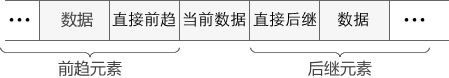

线性表是数据结构中最简单的数据存储结构，可以理解为“线性的表”。
线性，是说数据在逻辑结构上具有线性关系。
将具有线性关系的数据存储到计算机中所使用的存储结构称为线性表。
线性关系指的是数据一个挨着一个，总体呈线性分布。就好比“老鹰捉小鸡”游戏中，小鸡们全都手拉着手，它们之间的关系就可以称为线性关系。
换句话说，线性表中的数据在逻辑结构上相互挨着（手牵手），中间没有空隙。每个数据元素，在它的前面可以找到唯一一个数据和它挨着，后面也只有一个数据和它挨着。这样，数据在逻辑结构呈线性分布，称这样的存储结构为线性表。
线性表只对数据的逻辑结构有要求，根据实际存储的物理结构的不同（分散存储或者集中存储），线性表还可以进行更详细的分类，本节最后会详细介绍。
前趋和后继
对于线性表中的数据来说，位于当前数据之前的数据统称为“
前趋元素”，前边紧挨着的数据称为“
直接前趋”；同样，后边的数据统称为“
后继元素”，后边紧挨着的数据称为“
直接后继”。除非在线性表中插入或者删除数据元素，否则数据之间的关系不会改变。

图1 前趋和后继元素
数据元素、数据项、记录和文件
在线性表中，无论数据本身由多少种数据类型（每一种被称为一个“
数据项”）组成，每一条数据被称为“
数据元素”。
数据元素是数据结构考虑的基本单位，作为一个整体处理，数据项则是描述数据元素的各项特征的
好比工商管理管理的是各个企业，那么企业的名字、规模、董事长等等，前者就是数据元素，后者就是数据项
如果数据元素本身包含的数据项非常多，就可以称这个数据元素为一个“
记录”，多条记录组成一个“
文件”。
线性表的特点
用线性表存储的数据有两个特点：
-
存储的数据本身的类型一定保持相同，是int型就都是int型，是结构体就都是一种结构体。
-
数据一旦用线性表存储，各个数据元素之间的相对位置就固定了。
相对位置，指的是各数据元素在逻辑结构上的前后次序。
线性表的分类
之前讲过，逻辑结构上相邻的数据在实际的物理存储中有两种形式：分散存储和集中存储。
考虑到这两种情况，线性表分为两种，分别解决两种情况下数据的存储问题：
-
数据元素在内存中集中存储，采用顺序表示结构，简称“顺序存储”；
-
数据元素在内存中分散存储，采用链式表示结构，简称“链式存储”。